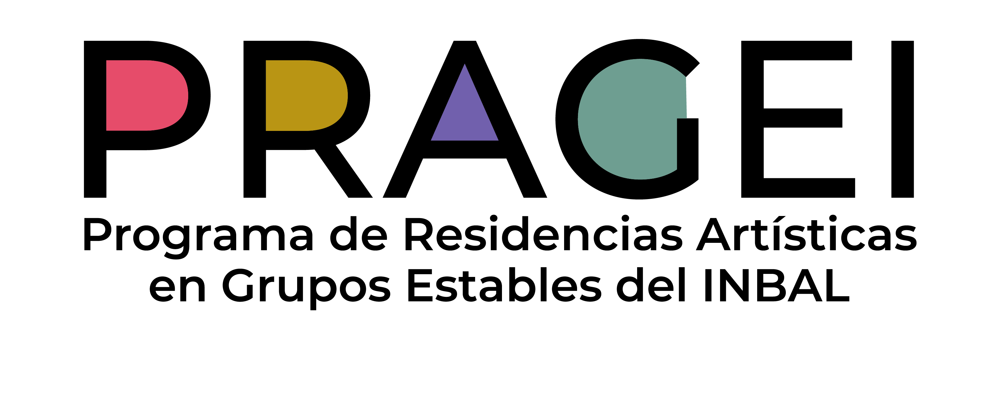

Autoría
Esquilo
Adaptación
Amaranta Osorio y Jorge Volpi
Dirección
Richard Viqueira
Capítulo II del Proyecto Espiral: ¿quién puede ser juez? Parte del programa Habitando a los griegos.
Clitemnestra aguarda el regreso de Agamenón, su marido, quien ha sacrificado a su hija Ifigenia para ganar una batalla. Él llega acompañado por Casandra, a quien ha convertido en su amante. El crimen de Agamenón no puede quedar impune y Clitemnestra decide hacer justicia con sus propias manos, en un país en el que parece imposible escapar a una espiral de muerte.
